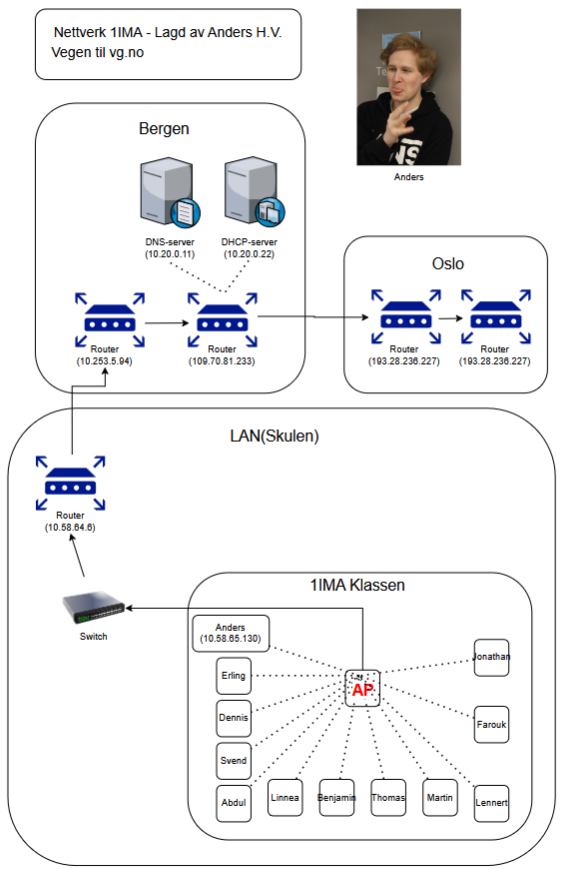
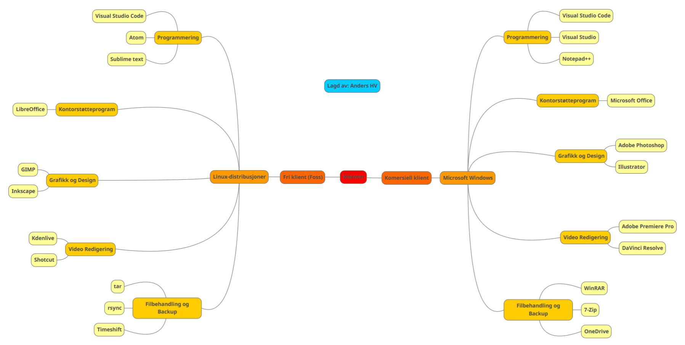
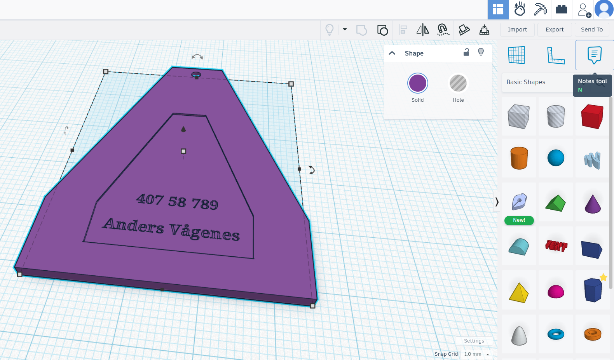
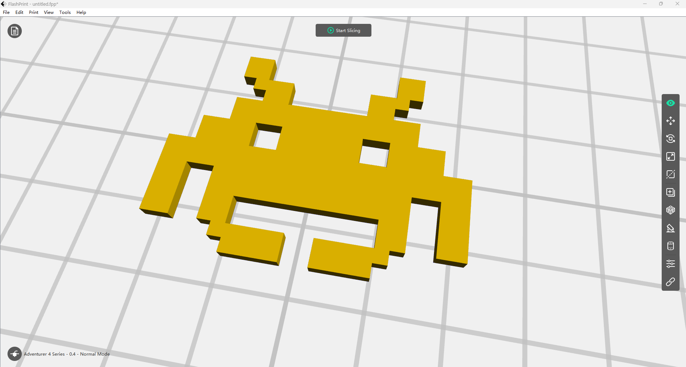

VirtualBox - 4
maskiner
VirtualBox - 4
maskiner VirtualBox - Windows og Linux + ping
VirtualBox - Windows og Linux + ping TP-Link Windows
TP-Link Windows TP-Link mobil
TP-Link mobil Cisco Packet Tracer
Cisco Packet Tracer- Draw.IO: nettverkskart
- MindMup: klient og programvare
- Tinkercad: Nøkkelring
- FlashPrint: SpaceInvader slice
 CMD: Mapper, filer og tree
CMD: Mapper, filer og tree